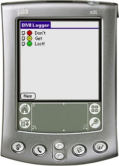

BMILog is a Body Mass Index logger. BMILog helps you keep track of your health with regards to your weight. The Body Mass Index is a number indicating if you are at a healthy weight.
BMILog runs on any Palm OS 3.0 or better device and is free to use.
Please read the Disclaimer before using BMILog!
You may support this project by donating any amount to my Pay Pal account but this is not required. A "Thank You" mail will be equally well received!
Download
Thanks
Thanks goes to Antoine (freewarefrench.com) for the translation of BMILog to french.
Changelog for BMILog
v1r3 (2003-05-10) Sorts the database whenever a HotSync occurs. This way, everything comes out just nice if you install your date into a fresh installation of BMILog on your PDA. v1r2 (2003-04-27) French translation by Antoine - freewarefrance.com. Support for Palm Print (http://www.stevenscreek.com/palm/palmprint.shtml) Fixed a nasty database bug which allowed multiple entries pr. day and which made the history come out ... nasty. v1r1 (2003-04-25) Initial release of BMILog.
Changelog for the BMILog Conduit
v1r1 (2003-04-25) Initial release of the BMILog Conduit.